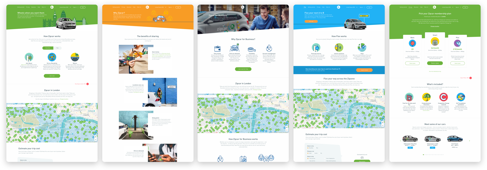

During my Spring 2019 semester co-op, I led the design update of the London Presales site design system (consistent with North America's site) across a 10-week sprint on the Product team.
Original desktop screenshots of UK Presales 2010
New desktop screenshots of UK Presales 2019
Throughout my co-op, I worked primarily on designs for the Consumers and Zipcar for Business (Z4B) Presales site, which is Zipcar's registration funnel for new users who are not Zipcar members. When I joined the Design team as a UX Designer Co-op in Jan 2019, I became responsible for any forthcoming Presales design decisions, primarily with one of Zipcar's higher priority Objectives and Key Results (OKR) to update the UK Presales site.
Across a 10-week sprint, I worked very closely with the UK Marketing team, Senior Manager of UK Marketing, UK Marketing team, Head of Product at Zipcar International (UK), UK Marketing team,and a Project Manager in the home office to update 16 unique site pages' wireframes. As the designer, I updated and created consistent design components, created playful icons and illustrations, and implemented UK Marketing's copy and images in situ with the wireframes.
During this timeline, Zipcar went through a brand style guide refresh, and established that the old flatline iconography will transition to circular. Following this update, I adopted graphics from Smashicons and set the consistent visual style for most of the current Presales icons, namely manipulating graphics, positioning, border color, border width, fill, and background color. The icons I designed will also be reflected in future Zipcar platforms, such as the membership site, mobile app, and communication emails.
Samples of my curated circular icons: Consumers Presales on the left half and Zipcar for Business on the right half.
Throughout my co-op, I worked primarily on designs for the Consumers and Zipcar for Business Presales site, which is Zipcar's registration funnel for new users who are not Zipcar members. The site designs was originally managed by the same designer who worked on our Member Web platform. When I joined the Design team as a UX Designer Co-op in Jan 2019, I became responsible for any forthcoming Presales design decisions, primarily with one of Zipcar's higher priority task to update the UK Presales site.
Based on positive user behavior and engagement metrics with the Cost Calculator on US Presales site, we brought the concept over to the UK site. I designed the all of the different selected states, depending on region specific products and what made the most sense for users to estimate pricing for an errand-specific Round Trip or a time-based Flex Electric car.
Designing for the cost calculator, a feature for users to estimate cost for an ideal Zipcar trip.
When reworking the geographic map, it was easier to communicate certain UX changes on a separate note to the developers, rather than directly modifying the wireframes. Instead of displaying all Zipcars as standard location pins per the old design, they can be indicated by simply the pin head; when a pin is clicked to view car details, it’s more intuitive for the selected state of the pin to enlargen slightly and show the pin arrow. Additionally, the old blue Flex mapping overlay was too dark and heavy (almost like the city was underwater), and cause an accessibilty issue with viewing the Flex pins and River Thames—a 70% color opacity would have a less overwhelming visual effect on the map.
Before and after screenshots of the geographic map. Interact with the updated map for London here.
Over the course of 10 weeks, it was an amazing journey and learning experience in designing with business in mind. Working with stakeholders on the team taught me the direct correlation between user design and successful metrics, and communicating with my PM, backend, and frontend engineers help me create optimized designs that were technically feasible to develop.
View the new UK Zipcar site at https://www.zipcar.com/en-gb!
At the end of my co-op, I dabbled in CROs, how metrics are measured, A/B testing, Optimizely, Google Analytics, and Hotjar on a brief project in improving the user registration rates through the registration funnel. I worked on redesigning the US Presales Pricing page until the end of my co-op.